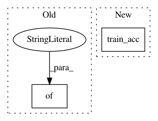

cb480110539e737e3e1537905e69245ceda7a3db,tests/pytorch/iris.py,IrisClassification,training_step,#IrisClassification#Any#Any#,58
Before Change
loss = self.cross_entropy_loss(logits, y)
logs = {"loss": loss}
return {"loss": loss, "log": logs}
def validation_step(self, batch, batch_idx):
x, y = batch
logits = self.forward(x)
After Change
x, y = batch
logits = self.forward(x)
loss = self.cross_entropy_loss(logits, y)
self.train_acc(logits, y)
self.log("train_acc", self.train_acc.compute(), on_step=False, on_epoch=True)
self.log("loss", loss)
return {"loss": loss}
In pattern: SUPERPATTERN
Frequency: 3
Non-data size: 2
Instances
Project Name: mlflow/mlflow
Commit Name: cb480110539e737e3e1537905e69245ceda7a3db
Time: 2021-02-03
Author: 51693147+ankan94@users.noreply.github.com
File Name: tests/pytorch/iris.py
Class Name: IrisClassification
Method Name: training_step
Project Name: williamFalcon/pytorch-lightning
Commit Name: 48718d7ce74f712da881e9585d66a8e0d54e7004
Time: 2021-01-08
Author: thomas@grid.ai
File Name: pl_examples/domain_templates/computer_vision_fine_tuning.py
Class Name: TransferLearningModel
Method Name: training_step
Project Name: williamFalcon/pytorch-lightning
Commit Name: 0e8ec93b28ecd86898b3668d48d346f510e95167
Time: 2021-01-06
Author: jspaezp@users.noreply.github.com
File Name: pl_examples/domain_templates/computer_vision_fine_tuning.py
Class Name: TransferLearningModel
Method Name: training_step